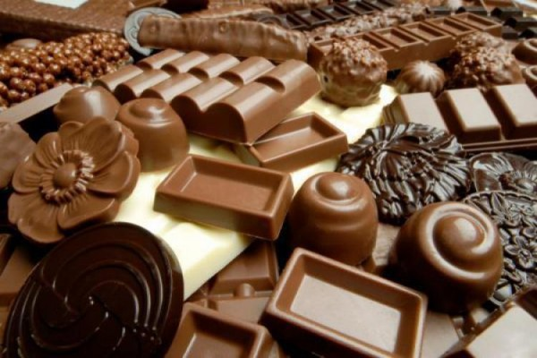

Напиток из плодов дерева какао появился около 3000 лет назад. Предполагается, что первыми придумали его индейцы-альмеки, цивилизация которых существовала во II веке до н. э. на территории юго-восточной Мексики, Гондураса и Гватемалы.
В I веке н. э. на смену цивилизации альмеков пришла цивилизация майя. Заселив полуостров Юкатан Центральной Америки, индейцы-майя обнаружили здесь деревья какао и, как и альмеки, разбив плантации этого растения, стали готовить напиток из его семян. Считая какао божественным даром, майя молились и приносили жертвы богу какао Эк Чуахе. Какао-бобы использовались также в качестве особой валюты.
В XII-XIV веках на территории современной Мексики существовало государство ацтеков. Покорив соседние племена, ацтеки взимали с них дань, в которую входили и какао-бобы, использовавшиеся для приготовления напитка, а также в качестве разменной монеты.
У ацтеков были особые единицы измерения зерен какао-дерева. Один мешок вмещал в себя около 24 тысяч какао-бобов, что равнялось 3 ксипуипилисам. Во дворец знаменитого императора ацтеков Монтесумы ежедневно доставлялось около 40 тысяч мешков зерен какао-дерева.
Для императора Монтесумы готовили шоколадный напиток следующим способом: обжаренные какао - бобы растирали с зернами молочной кукурузы, а затем смешивали с медом, ванилью и соком агавы.
Сохранилась древняя легенда о мексиканском садовнике по имени Кветцалькоатль, которого боги наделили талантом разбивать прекрасные сады. Однажды Кветцалькоатль вырастил невзрачное деревце, которое назвал какао. Семена его плодов, похожие по форме на огурцы, были горькими на вкус. Зато приготовленный из них напиток вселял бодрость и развеивал тоску. И люди стали ценить какао на вес золота. Кветцалькоатль разбогател и, развращенный богатством, возомнил себя равным всемогущим богам. За это боги наказали его, лишив рассудка. В приступе ярости садовник безжалостно уничтожил все растения, кроме одного. Этим растением оказалось дерево какао.
В 1519 году конкистадор Эрнан Кортес завоевал часть Мексики и ее столицу Теночтитлан. Испанца заинтересовали огромные запасы сушеных какао-бобов, обнаруженные им в кладовых дворца царя Монтесумы.
Хотя горький напиток из зерен какао-дерева не пришелся по вкусу испанцам, они по достоинству оценили его аромат и тонизирующий эффект.
Возвратившись в Испанию, конкистадор в надежде умилостивить короля, до которого уже дошли слухи о творимых им бесчинствах, привез ему в подарок какао-бобы и рецепт приготовления напитка. Королевской чете чоколатль (переименованный в шоколад) очень понравился, и этот напиток быстро вошел в моду у испанской знати. В шоколад стали добавлять тростниковый сахар, корицу и мускатный орех, благодаря чему напиток стал намного вкуснее.
Существует мнение, что первым европейцем, попробовавшим шоколад, был Христофор Колумб.
В 1502 году жители острова Гайана угостили знаменитого путешественника горячим напитком из какао-бобов. Но Колумбу не понравился горячий горький напиток, приправленный неизвестными пахучими травами.
Следует отметить, что какао-бобы стоили в то время очень дорого. Их использовали в качестве валюты. Например, за 100 зерен какао можно было купить раба.
Шоколад считали панацеей от многих болезней и использовали как лекарство.
Однако использовали шоколад и в преступных целях. Отдающий горечью вкус и сильный аромат шоколада хорошо маскировали привкус яда.
Сначала напиток из какао-бобов был признан исключительно мужским напитком, так как он был очень крепким и горьким. Но англичане в 1700 году догадались добавить в шоколад молоко, что сделало напиток более легким и вкусным. С тех пор шоколадный напиток полюбили женщины и дети.
Из - за того что объемы поставок какао - бобов были недостаточными, испанцы скрывали от других государств секрет семян какао. Лишь в XVII веке остальное население Европы узнало тайну замечательного напитка.
Католическая церковь запрещала есть во время поста все, что доставляло наслаждение. Поэтому долгое время шли споры о том, можно ли пить шоколад во время поста. В 1569 году епископы Мексики устроили по этому поводу специальное собрание, на котором постановили отправить в Ватикан отца Джероламо де Сан-Винченцо, чтобы спор разрешил сам Папа Римский. Папа Пий V оказался в некоторой растерянности. Он никогда не пробовал шоколада и даже не знал, что это такое. Джероламо преподнес ему чашечку какао. Папа отхлебнул напиток, сморщился и произнес историческую фразу: "Шоколад поста не нарушает, не может же такая гадость приносить кому-то удовольствие".
Итальянцы первыми изобрели лицензию на производство шоколада. В Нидерландах какао-бобы были контрабандным товаром, а император Священной Римской империи (XVI век) Карл V хотел даже ввести монополию на зерна какао.
Но основной вклад в распространение шоколада в Европе внесла Анна Австрийская, дочь испанского короля Филиппа III и супруга французского короля Людовика XIII. В 1616 году она привезла в Париж ящик какао-бобов, и вскоре шоколад стал популярным во всей Европе.
Но, несмотря на свою популярность, шоколад оставался очень дорогим. Насладиться этим дивным напитком долгое время могли позволить себе только аристократы.
С течением времени число плантаций какао значительно увеличилось, наладилось промышленное производство шоколада, благодаря чему этот продукт стал доступным и широким массам населения. В 1659 году француз Давид Шайу открыл первую в мире шоколадную фабрику, а в середине XVIII века во Франции появились первые кондитерские, где посетителям предлагали любимый напиток; К 1798 году в Париже насчитывалось уже около 500 таких заведений. А в Англии знаменитые Шоколадные дома (Chocolate Houses) стали популярнее чайных и кофейных салонов.
До начала XIX века шоколад употребляли исключительно в жидком виде, пока швейцарец Франсуа Луи Кайе не создал в 1819 году первую в мире плитку твердого шоколада. В 1820 году недалеко от местечка Виви была построена фабрика по производству шоколада.
Вскоре шоколадные фабрики стали открываться по всей Европе. Технологии изготовления твердого шоколада постоянно совершенствовались. В рецептуру твердого шоколада стали добавлять орехи, цукаты, различные сласти, вино и даже пиво.
В 1875 году швейцарец Даниэль Петер смешал какао-массу со сгущенным молоком. Так появился молочный шоколад, или, как его называли, швейцарский шоколад. Тогда же Рудольф Линдт разработал машины для вальцевания какао-массы, в результате чего из шоколадной массы удалялась лишняя влага, и она становилась густой и нежной.
Что касается России, то первые фабрики по производству шоколада были открыты в Москве приблизительно в то же время, что и в других европейских городах, - в середине XIX века.
Однако производство плиточного шоколада в нашей стране контролировали в основном иностранцы, так как отечественных специалистов в то время было мало. Самыми крупными предприятиями тогда были немецкая фирма "Эйнем" (впоследствии "Красный Октябрь") и французская семейная компания "А. Сиу и К°". Из отечественных предприятий наиболее известной была фабрика "Бабаевская", основанная Алексеем Ивановичем Абрикосовым.
Сегодня мировое производство шоколада и шоколадных изделий составляет более 4 миллионов тонн, крупнейшими их производителями и потребителями являются США, Великобритания, Франция, Германия, Швейцария и Япония. Так, например, потребление шоколада в Швейцарии составляет 19, в США- 13, а в России - 4 килограмма на душу населения в год.